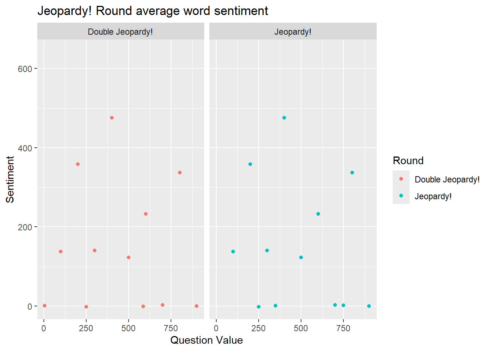
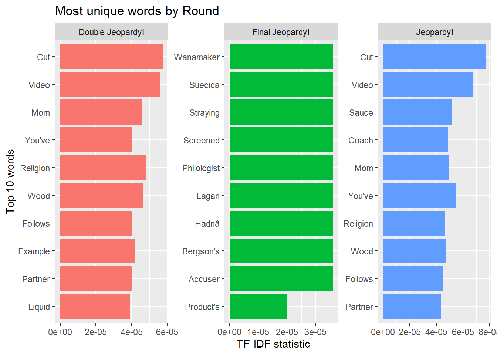

Jeopardy! is a long-running game show with a reversed format in which an answer is given first as a clue where the contestant has to come up with a question to that answer. The show is at times dubbed as America’s Favorite Quiz Show. It has run for over six-decades with over 8,000 episodes making it one of the longest-running game shows in television history.
Among the record holders, Ken Jennings holds the record for the longest winning streak at 74 games, earning over 2.5 million during regular play. James Holzhauer, a professional sports gambler, set records for single-game winnings, raking in 131,127 in one match and earning over $2.4 million in just 32 games.
Holzhauer is also known for using a highly analytical and statistical approach to how to play the game show. He studied question patterns, clue values, and how to find Daily Doubles effectively. This led to an untraditional way of playing jeopardy where he would ask for questions randomly around the board instead of column-by-column.
In this project, I will try to analyze historical Jeopardy Questions to see if the text itself has any patterns among nearly 80% of questions before 2011. Does length of question differ from normal to double jeopardy to final jeopardy? Are easier questions different sentimentally than harder ones? Lets explore!
Rows: 216930 Columns: 7
── Column specification ────────────────────────────────────────────────────────
Delimiter: ","
chr (6): Air Date, Round, Category, Value, Question, Answer
dbl (1): Show Number
ℹ Use `spec()` to retrieve the full column specification for this data.
ℹ Specify the column types or set `show_col_types = FALSE` to quiet this message.
# tidy data a bit (remove image questions)jeopardy <- JEOPARDY_CSV |>mutate(`Air Date`=mdy(`Air Date`)) |>filter(!str_detect(Question, "href"),!str_detect(Question, "_")) # 1st regular expressionhead(jeopardy)
# A tibble: 6 × 7
`Show Number` `Air Date` Round Category Value Question Answer
<dbl> <date> <chr> <chr> <chr> <chr> <chr>
1 4680 2004-12-31 Jeopardy! HISTORY $200 "For th… Coper…
2 4680 2004-12-31 Jeopardy! ESPN's TOP 10 ALL-TI… $200 "No. 2:… Jim T…
3 4680 2004-12-31 Jeopardy! EVERYBODY TALKS ABOU… $200 "The ci… Arizo…
4 4680 2004-12-31 Jeopardy! THE COMPANY LINE $200 "In 196… McDon…
5 4680 2004-12-31 Jeopardy! EPITAPHS & TRIBUTES $200 "Signer… John …
6 4680 2004-12-31 Jeopardy! 3-LETTER WORDS $200 "In the… the a…
# have a word column instead of by long questionjeopardy_tidy <- jeopardy |>unnest_tokens(output = word, input = Question) |># mutate(Value =as.numeric(gsub("\\$", "", Value)))
Warning: There was 1 warning in `mutate()`.
ℹ In argument: `Value = as.numeric(gsub("\\$", "", Value))`.
Caused by warning:
! NAs introduced by coercion
# A tibble: 6 × 7
`Show Number` `Air Date` Round Category Value Answer word
<dbl> <date> <chr> <chr> <dbl> <chr> <chr>
1 4680 2004-12-31 Jeopardy! HISTORY 200 Copernicus for
2 4680 2004-12-31 Jeopardy! HISTORY 200 Copernicus the
3 4680 2004-12-31 Jeopardy! HISTORY 200 Copernicus last
4 4680 2004-12-31 Jeopardy! HISTORY 200 Copernicus 8
5 4680 2004-12-31 Jeopardy! HISTORY 200 Copernicus years
6 4680 2004-12-31 Jeopardy! HISTORY 200 Copernicus of
Sentiment by question value
Here is a graph of average word sentiment by question value for each. We can see that they are very similar but do vary between almost zero sentiment and higher values. This is likely influenced by “Daily Double” Questions where contestants can answer and bet how much they would like to wager to win before seeing the questions. Still, all of the sentiments are above or around zero showing that the majority of Jeopardy questions have positive sentiment with perhaps a slight decrease as questions get harder.
# Graph 1#sentimentsafinn_sentiments <-get_sentiments(lexicon ="afinn")1# plot for sentiment
[1] 1
jeopardy_tidy |>filter(Round !="Final Jeopardy!", Round !="Tiebreaker") |>inner_join(afinn_sentiments) |>count(Round, index = Value, value) |>mutate(sentiment = value*n) |>group_by(index) |>summarize(Round = Round,sentiment =mean(sentiment),Question_Value = index) |>ggplot(aes(x = Question_Value, y = sentiment, color = Round)) +geom_point() +facet_wrap(~Round) +labs(title ="Jeopardy! Round average word sentiment",y ="Sentiment",x ="Question Value",color ="Round")
Joining with `by = join_by(word)`
Warning: Returning more (or less) than 1 row per `summarise()` group was deprecated in
dplyr 1.1.0.
ℹ Please use `reframe()` instead.
ℹ When switching from `summarise()` to `reframe()`, remember that `reframe()`
always returns an ungrouped data frame and adjust accordingly.
`summarise()` has grouped output by 'index'. You can override using the
`.groups` argument.
Warning: Removed 20 rows containing missing values or values outside the scale range
(`geom_point()`).

Most Distinguished Words by Round
By round, here is a chart of the most unique words by Round of Jeopardy! by using the TF-IDF statistic. It is clear from these graphs that regular Jeopardy! has the least unique values given closer statistics to 0, while Double Jeopardy! and Final Jeopardy! have more distinct words. This may be due to Final Jeopardy! having less questions overall, but still shows that questions may get slightly harder as the game goes on.
# counting the words and removing "___"wordcount_jeopardy <- jeopardy_tidy |>mutate(word =str_to_title(word)) |># 2nd str_functionfilter(Round !="Tiebreaker",!str_detect(word, "\\_"),!str_detect(word, "__"))|>count(Round, word) |>anti_join(stop_words) |>group_by(Round)
Joining with `by = join_by(word)`
# making TF_IDF infojeopardy_tidy_tf <- wordcount_jeopardy |>bind_tf_idf(word, Round, n) |>arrange(-tf_idf)
# Graph 2, text analysis 1jeopardy_tidy_tf |>group_by(Round) |>arrange(desc(tf_idf)) |>slice_max(tf_idf, n =10) |>ungroup() |>ggplot(aes(x =fct_reorder(word, tf_idf), y = tf_idf, fill = Round)) +geom_col(show.legend =FALSE) +coord_flip() +facet_wrap(~Round, scales ="free") +labs(title ="Most unique words by Round",y ="TF-IDF statistic",x ="Top 10 words")

Pairs of Words
We can do the same thing with pairs of words by round to see what is most common. Here we see the most common types of questions asked in jeopardy contain “Also called” and “you might” which give scenarios for the answers you are given. Final Jeopardy has some more random combinations. There is data from nearly 6000 shows, of which most contain final jeopardy, so these questions are likely harder and have a different average format to the first two rounds. Still, for every final jeopardy question, there are 30 of each of Double Jeopardy and Jeopardy.
Let’s see what questions “Wanamaker”, “suecica”, or “Hadna came from and what their answers were. We can also look at what the answers were for the most common 2-word question
# see what answers had "wanamaker"jeopardy_tidy |>filter(Round =="Final Jeopardy!") |>filter(str_detect(word, "wanamaker"))
# A tibble: 2 × 7
`Show Number` `Air Date` Round Category Value Answer word
<dbl> <date> <chr> <chr> <dbl> <chr> <chr>
1 3026 1997-10-27 Final Jeopardy! FAMOUS BUILDINGS NA The Glo… wana…
2 4777 2005-05-17 Final Jeopardy! FAMILIAR PHRASES NA The cus… wana…
# get the questionsjeopardy |>filter(Answer =="The customer is always right"| Answer =="The Globe Theatre") |>select(Question)
# A tibble: 2 × 1
Question
<chr>
1 Richard Burbage & Sam Wanamaker, about 400 years apart, were responsible for …
2 This 5-word rule or maxim has been attributed to both H. Gordon Selfridge & J…
For wanamaker, we can see there are two separate people with the last name wanamaker had questions asked about them
# A tibble: 2 × 7
`Show Number` `Air Date` Round Category Value Answer word
<dbl> <date> <chr> <chr> <dbl> <chr> <chr>
1 2984 1997-07-17 Final Jeopardy! SCIENTISTS NA Carolus Linna… suec…
2 2984 1997-07-17 Final Jeopardy! SCIENTISTS NA Carolus Linna… suec…
# A tibble: 7 × 1
Question
<chr>
1 "This N. European said his grave-stone should be inscribed Princeps botanicor…
2 "In 1735 this Swed. naturalist published \"Systema Naturae\", naming & classi…
3 "This 18th century Swedish botanist was introduced to botany by his father, a…
4 "While in Holland in 1735, this Swede published his \"Systema Naturae\", a ta…
5 "\"Kings play chess on finely grained sand\" is a mnemonic device used to hel…
6 "In the 1740s he published \"Flora Suecica\" & \"Fauna Suecica\", 2 volumes o…
7 "Because he wrote his books in Latin, Swedish botanist Carl von Linne was bet…
Here we can see that there were 7 different jeopardy questions asking about Carolus Linnaeus as an answer, but one Final jeopardy round that had plant publications mentioning them.
# A tibble: 3 × 8
`Show Number` `Air Date` Round Category Value Answer linenumber bigram
<dbl> <date> <chr> <chr> <chr> <chr> <int> <chr>
1 4165 2002-10-11 Final Jeopar… FAMOUS … None Benja… 623 years…
2 4689 2005-01-13 Final Jeopar… FEDERAL… None Georg… 864 years…
3 5025 2006-06-16 Final Jeopar… TRANSPO… None London 980 years…
As for years service, we see that the answers have famous leaders, representatives, and London which are fairly well known. Let’s see how many questions have Benjamin Franklin as an answer
sum(str_count(jeopardy$Answer, "Benjamin Franklin")) # 3rd str_ function
[1] 76
There were 76 questions with Benjamin Franklin as an answer.
Final thoughts
From these graphs and analyses, we can tell that because there are so many Jeopardy! and Double Jeopardy! questions, they have a lot of the same common phrases and ways of asking questions, likely due to subtle tendencies from the writers. Questions from these rounds are seemingly all neutral or positively sentimented over the average of thousands of shows. This could be due to wanting to avoid very negative topics or other harsh language for television. While there definetly are tendencies in Jeopardy questions, there are so many that a good, broad knowledge of many different topics is needed to beat the game and come out on top of opponents.